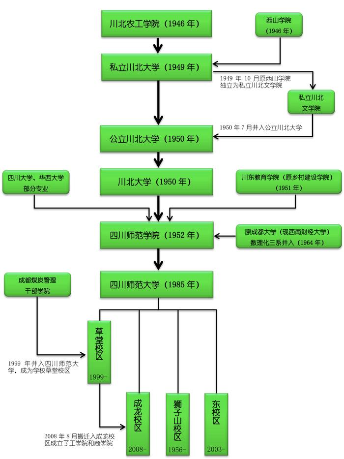

四川师范大学创建于1946年，其诞生与东北大学有直接的历史渊源。抗战初期，东北大学内迁到四川省三台县办学。抗战胜利后，东北大学迁回沈阳，留川师生在东北大学校址创建了川北农工学院，1950年合并川北文学院，更名为川北大学，并迁到四川省南充市。1952年，以川北大学为主体，合并川东教育学院（原乡村建设学院）、四川大学和华西大学的部分专业，组建四川师范学院，1956年迁到成都现址。1964年，原成都大学（现西南财经大学）数理化三系并入我校。1999年，原煤炭部成都煤炭干部管理学院并入我校。1985年，经原国家教育委员会批准，更名为四川师范大学。2006年，学校被教育部评为本科教学优秀单位和被批准为博士授权单位。
四川师范大学是四川省人民政府举办的全日制综合性省属重点大学，是四川省举办师范类本科专业最早、师范类院校中办学历史最为悠久的大学。四川师范大学经65年的建设和发展，已成为文理渗透，理工、经管结合，师范与非师范并重的多学科协调发展的教学研究型大学。
